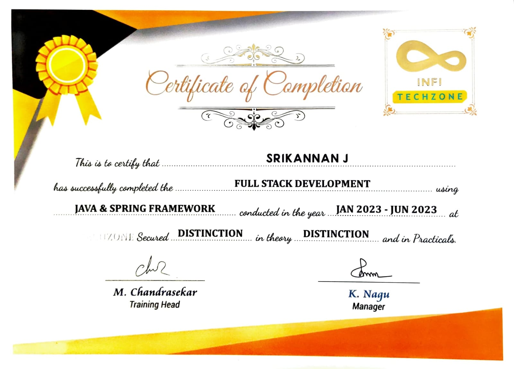

Java • Spring Boot • JSP • Hibernate • MySQL
Building scalable, maintainable web applications with strong backend logic and clean code practices.
📄 Download ResumeI am a passionate and motivated Java developer aiming to build scalable, real-world web applications. Skilled in backend development using Java technologies and experienced in designing user-friendly frontends using HTML, CSS, and JavaScript. I focus on writing clean code, following the MVC pattern, and continuously improving my skills to match industry trends.
A snapshot of my core competencies and development tools.
Issued by: Infi Techzone, Salem
Date: August 2023
Completed hands-on training covering Java, Spring Boot, JSP, Hibernate, REST APIs, and front-end development.
Built a fully functional resort management system handling room bookings, availability, and reporting.
Developed a web-based system using Spring Boot and Hibernate to manage online bill generation via REST APIs.
Interior project tracking system with admin module, stage-based task management, and user dashboards.
Institution: Sona College of Arts & Science, Salem
University: Periyar University (2025–2026)
Current CGPA: 7.6 (Ongoing)
Pursuing a master's degree in computer science with a focus on advanced programming, distributed systems, software engineering, and cloud computing. This program is enhancing my ability to solve complex real-world problems using modern development frameworks and best practices.
Institution: CMS College of Science and Commerce, Coimbatore
University: Bharathiar University (2018–2021)
Final CGPA: 7.3
Acquired strong foundations in data structures, algorithms, object-oriented programming, database systems, and computer networks. Completed academic mini-projects and lab exercises that prepared me for real-time software development tasks.
School: St. Paul’s Higher Secondary School, Salem
Year of Completion: 2018
Score: 61%
Chose Computer Science as my stream, where I was introduced to fundamental programming concepts, logical problem solving, and mathematics — laying the groundwork for my career in IT.
School: St. Paul’s High School, Salem
Year of Completion: 2016
Score: 85.4%
Demonstrated academic excellence and discipline at the foundational level of my schooling, which helped me build a strong academic mindset and learning habit.